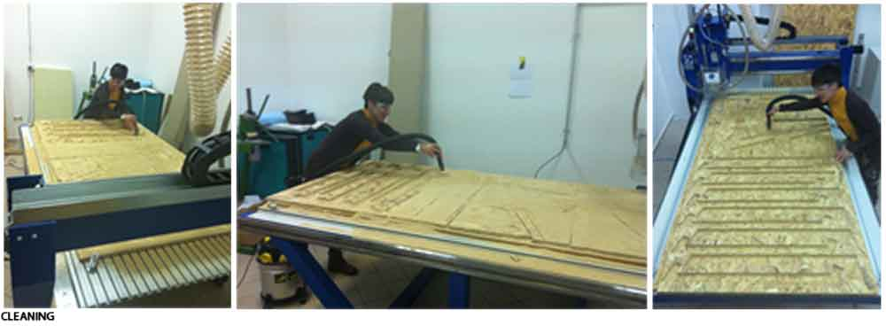

Week 8
Computer-Controlled Machining
Furnishing
Assignment: Make something big.
- For this assignment, I decided to design a chair for my new home.
DESIGN
- I did the design in Rhino. I kept the joints simple. Press fit parts require filleted slots on inside corners. We did a test to see how the joints work and the tolerance of the machine.
MATERIALS:
- Obs wood, 2.10m x 1.10m and thickness 18 mm.
TOOLS:

-Milling machine "Enterprise"
-End mill 6mm
-Mask
-Screws
-Glasses
-Screwdriver
-Gloves
-Headphones
-Vacuum cleaner
-Motion sensors
MODELING:

I modeled my chair with Rhinoceros.
Position of the points in the free areas of the drawing. Serve to block the cutting table
Then I exported the selection in dxf.
CUTTING:
I open the program Art Cam 2013
Amount the dxf file, and the program does not recognize the layers.
With Art Cam tell the machine which tool I'm going to use, the type of material that I have to cut and features.
With Art Cam I created the file machine control.
The first thing to do is to select the points to be drilled, to use them to block the cutting table.
Do the tool type (wood-6mm)
I tell the program to drill and how (4mm)
I give the file a name (drill)
Calculate now
DRILLING:
I open the program Iso.Master Interface.

-I load my file "drill.ISO"
-I place the sacrificial level on the milling machine
-I position my work plan
-Calculating the X-Y-Z
-Checking the computer work path preview
-Start drilling
-I fixed the screws with the drill to lock the cutting plane.
MILLING:
I repeat the same process as I did before, but this time is to cut and not to drill, so the values will change.
I open the program Art Cam 2013
-I select the internal lines to be cut
-Inside toolpath
-Start Depth 0
-Finish Depth 19mm
-Tool 6mm wood
-bridge
-Name (cuttinginside)
-Calculate now
-Save
-I do the same thing to the external lines, but I select Outside toolpath.
I open the program Iso.Master Interface.
-I load my file "cuttinginside.ISO and cuttingoutside.ISO"
-I reset the X-Y-Z
-And start again
CLEANING: 
GRIND:

ASSEMBLY:

The masterpiece, with some damage, is over.
All this work I described, it may seem easy and mechanic, but the truth is that everything always happens.
For example .: for our safety near the CNC were put motion sensors, so we can not pass the yellow line at work milling.
After much difficulty I was able to mill my chair, and half the work my colleague has sneezed and work stopped abruptly halfway there.
I had to start all over, from the axis positioning.